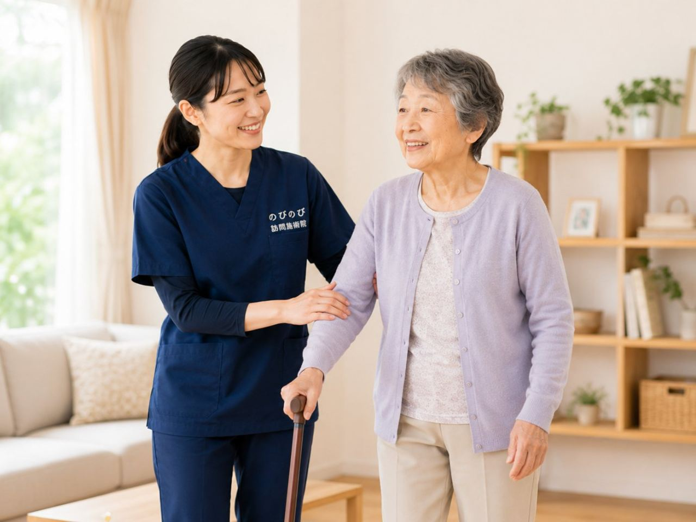

春先の花粉が飛ぶ時期になると、目のかゆみや鼻水のほかに、「なんとなく体がだるい」「頭が重い」といった全身の不調を感じる方がいらっしゃいます。若いころより回復に時間がかかるぶん、「年のせい」「花粉だから仕方ない」とがまんしてためこんでしまいがちです。季節の不調と体のこわばりのつながりを整理してお伝えします。
短くまとめます。花粉の時期は、高齢の方もだるさや体の重さ、寝不足による不調を感じやすくなります。訪問の鍼灸は、こわばりを和らげて寝つきや体の楽さを支える在宅ケアとして役立つことが期待できます。ただし、強い呼吸器症状や高熱があるときは受診が先です。対象は医師が必要と認めた慢性の痛み等で、施術1回は総額3,950円、1割の方でおよそ1回395円ほど。
花粉の時期、高齢の方が感じやすい不調
春先の花粉が飛ぶ時期になると、目のかゆみや鼻水といったよく知られた症状のほかに、「なんとなく体がだるい」「頭が重い」「日中ぼんやりする」といった全身の不調を感じる方がいらっしゃいます。高齢の方の場合、鼻づまりで夜よく眠れず寝不足になったり、季節の変わり目の寒暖差も重なって、体の重だるさやこわばりが強く出ることがあります。若いころより回復に時間がかかるぶん、こうした季節の不調を「年のせい」「花粉だから仕方ない」とがまんして、つらさをためこんでしまいがちなのも、この時期の特徴です。
寝不足とだるさが、こわばりを呼ぶ
花粉の時期に眠りが浅くなると、体を休める時間が足りず、日中の疲れが抜けにくくなります。疲れがたまると、首や肩、背中の筋肉がこわばり、そのこわばりがまた寝つきを悪くする。そんな悪いめぐりに入りやすくなります。もともと肩や腰に慢性の痛みを抱えている方は、この時期にその痛みが強く感じられることもあります。だるさや体の重さは目に見えないぶん、まわりに伝わりにくく、ご本人だけが抱えてしまいがちです。季節の不調と体のこわばりは、こうしてつながっていることがたびたびあります。
強い呼吸器症状や高熱があるときは、受診を先に
先にお伝えしておきたいことがあります。せきが激しく続く、息苦しい、ぜいぜいと音がする、高い熱が出ている。こうしたときは、花粉のせいと決めつけず、まずかかりつけ医や医療機関を受診してください。花粉症のように見えても、風邪や気管支の病気、ほかの体調不良が隠れていることがあります。高齢の方は症状が急に進むこともあるので、「いつもの花粉と違う」と感じたら早めの受診が安心です。在宅の鍼灸は、あくまで受診の必要がない範囲の、季節のだるさやこわばりへの補いとしてお考えください。
鍼灸は季節のだるさにどう働きかける？
鍼やお灸で花粉症そのものを治せると言い切ることはできません。ですが、首や肩、背中のこわばった筋肉を和らげ、血のめぐりを促すことで、体の重だるさが楽になったり、こわばりがゆるんで寝つきが助けられたりすることが期待できます。冷えると体がこわばりやすい方には、お灸のあたたかさが心地よく感じられることが多いものです。季節の変わり目に慢性の肩こりや腰の痛みが強くなる方にとっては、その痛みを和らげる助けにもなります。負担にならない範囲で、その日の体調に合わせて心地よさを大切に進めます。
眠りを助ける、という視点
花粉の時期の不調の多くは、寝不足がからんでいます。夜しっかり眠れると、日中のだるさもやわらぎやすくなります。痛みやこわばりが強いと、横になっても体のどこかに力が入ったままになりやすく、それが眠りを浅くします。首や肩まわりのこわばりが和らぐと、その力みが減って、寝つきが助けられることがあります。感じ方には個人差がありますが、眠りは体を立て直す土台です。こわばりをほぐしておくことは、その土台を支える助けになります。
在宅で受ける施術は一回いくら？
訪問の鍼灸を医療保険で受ける場合、費用は自己負担分だけですみます。一人が施術を1回受けると総額は3,950円で、1割負担の方でおよそ1回395円、2割負担の方でおよそ790円が目安です。そして介護保険の限度額とは別の枠なので、他のサービスの枠とは別に受けられます。その月の明細をお渡しするので、費用がはっきりわかります。対象となるのは、医師が治療の必要を認めた慢性的な痛みやしびれなどで、通院がむずかしい方です。季節の不調に伴って慢性の痛みがつらくなっている方は、ご相談ください。たとえば週1回なら月およそ1,580円、週2回なら月およそ3,160円（いずれも1割の方）が目安です。
花粉の時期を、家で楽に過ごす工夫
施術と合わせて、日々のちょっとした心がけも助けになります。花粉の飛ぶ日は、窓を開けっぱなしにせず換気は短めにする、外出から帰ったら衣類の花粉を払う、寝室を清潔に保って眠りの環境を整える。寒暖差で体を冷やさないよう、羽織るものを一枚用意しておく。だるいときは無理に動かず、こまめに横になって休む。水分をとって、規則正しい食事と睡眠を心がける。こうした小さな工夫の積み重ねが、季節の不調とうまくつきあう土台になります。つらさが長く続くときは、がまんせずかかりつけ医にも相談してください。
「花粉だから仕方ない」で片づける前に
だるさや体の重さは、「花粉だから」「年だから」と受けとめて、そのままがまんされがちです。ですが、寝不足やこわばりをためこんだままにしていると、慢性の痛みが強くなったり、動くのがおっくうになって体力が落ちていったりすることがあります。季節の不調も、こわばりをほぐし、眠りを整え、無理なく体を動かすことで、いくらか楽に過ごせることがあります。強い症状は医療機関へ、季節のだるさやこわばりへの補いは在宅のケアへ。役割を分けて考えると、この時期を過ごしやすくなります。
北摂・阪神間・大阪市内で在宅ケアをお探しの方へ
花粉の時期のだるさや体の重さ、寝不足による不調に、慢性の痛みやこわばりが重なってつらい。でも通院はむずかしい。そんな方に、在宅での鍼灸は体を楽に保つ一つの手段になります。豊中・吹田・茨木・箕面・摂津・池田、尼崎・伊丹、淀川区・東淀川区・都島区・北区・旭区にお住まいで、医師が治療の必要を認めた慢性の痛みでお困りの方はご相談ください。強い呼吸器症状や高熱があるときは受診を先に、季節のだるさやこわばりへの補いは在宅の施術に。この時期を少しでも楽に過ごせるようお手伝いをします。
体のほかの部分が気になるときは相談の多い症状から探すに、ご病気や体の状態から探したいときは持病や体の状態から探すに、それぞれ一覧があります。費用や手続きのことは料金・同意書・制度のよくある疑問をご覧ください。
よくある質問
鍼灸で花粉症そのものはよくなりますか？
鍼やお灸で花粉症そのものを治せると言い切ることはできません。訪問の鍼灸は、首や肩、背中のこわばりを和らげ、体の重だるさや寝つきを支える補いとしてお役に立てる場合があります。強いせきや息苦しさ、高熱があるときは花粉のせいと決めつけず、まず医療機関を受診してください。
花粉の時期だけ受けることもできますか？
お体の状態やご希望に合わせて相談して決められます。医師が治療の必要を認めた慢性の痛みなどが対象になるので、季節の不調に伴ってその痛みがつらくなっている方は、まずご相談ください。無理なく続けられる回数を一緒に考えます。
薬を飲んでいても施術を受けられますか？
お薬の内容をうかがったうえで、その日の体調に合わせて進めます。気になることがあれば、かかりつけ医にも確認しながら無理のない形にします。
寝不足でだるいときでも受けられますか？
その日の状態に合わせて、負担にならない範囲で行います。つらいときは内容を軽くしたり、日をずらしたりすることもできます。